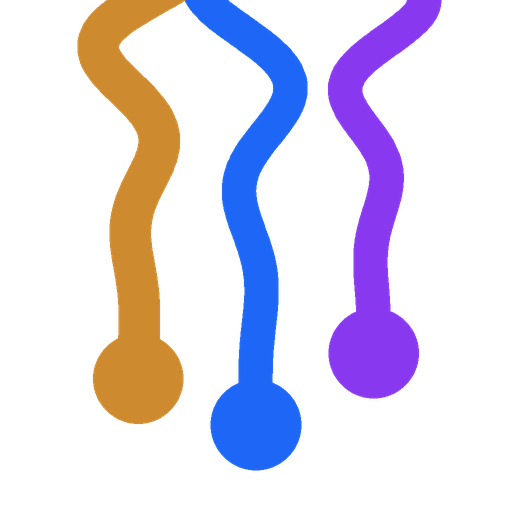

The mark
bare mark · dark

bare mark · lightthe single-strand S
app icon · 32
app icon · 128
Lockups
for dark surfaces
for light surfaces
Favicon
16
32
64
Tray & menubar
tray-white · dark tray
tray-black · bright tray
menubar-mono · macOS template
Hero — the README banner
Palette
Dark (default)
--panel | #181825 | ground plate, app panels |
--lane-1 | #89b4fa | first commit lane |
--lane-2 | #cba6f7 | second commit lane |
wheat | #e2b760 | the pasta strand |
--ink | #d6def4 | wordmark colour |
Light
--panel | #e6e9ef | ground plate, app panels |
--lane-1 | #1e66f5 | first commit lane |
--lane-2 | #8839ef | second commit lane |
wheat | #ce8a2e | the pasta strand |
--ink | #4c4f69 | wordmark colour |